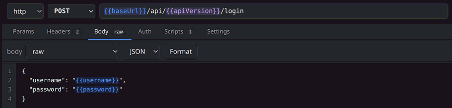

cat lst/README.md
# lst
An API and socket testing tool. Four protocols, Postman-compatible scripting, and a workspace of plain files you can commit to git.
| role | Sole designer and engineer |
|---|---|
| built_with | Go 1.25, embedded web UI |
| protocols | HTTP, WebSocket, raw TCP, gRPC |
| source | github.com/AkiraVD/lightweight-api-test-tool |

{{variable}} is coloured by the scope it resolves from. Red means nothing defines it yet.cat lst/problem.md
## The problem
API clients have grown into accounts, sync services and AI panels, while the actual job — send a request, capture a token, assert on the response — hasn’t changed. And more of that job now happens over WebSocket or gRPC, in tools that only really speak HTTP.
cat lst/decisions.md
Borrow the scripting model, don’t invent one
Scripts use the pm.* API people already know, so an existing collection’s logic keeps working. Adoption cost was the design constraint, not novelty.
Variables carry their scope in the interface
Colour shows where a value resolves from, so the most common failure is visible before you send rather than arriving as a confusing 401.
Secrets split out, so the directory is safe to push
Secret values live only in a gitignored file and are blanked in the committed ones. The workspace diffs cleanly in a pull request.
Reuse the browser that’s already running
Hosting the UI in a running Chromium costs ~40 MB rather than the ~430 MB of starting one just for lst. Firefox has no --app, so those users get a tab — and the UI says so instead of failing quietly.
cat lst/what-id-change.md
[A limitation you know about, and how you’d address it. Keep this section — it’s the part an interviewer will quote back at you.]
cd ../uictl